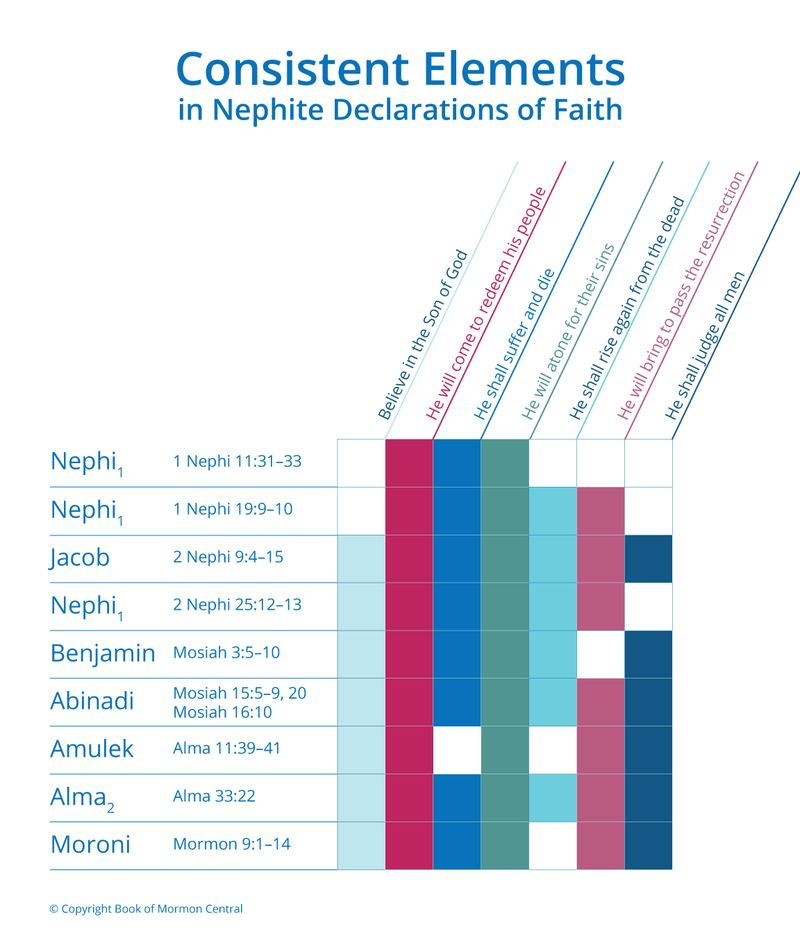

It is interesting that Alma, in the middle of giving one of the most profound doctrinal discussions of faith and testimony that can be found anywhere, is also able to relate to these people and solve their practical problems. They had been expelled from the places of worship they had built with their own hands; they felt that this excluded them from praying or worshipping with equal dignity.
Once we are aware of what the issues were for the Zoramite poor, we can see how effectively Alma addressed each one of their concerns, replacing what they had been taught, or maybe what they had never been taught, with the truths of the gospel. He did not ignore the realities of what they had been going through. Although Alma 32–33 is a very tightly argued and beautifully sophisticated message to the people, part of Alma’s skill lies in relating closely to them, addressing their immediate needs, and recognizing their difficulties.
The most important thing we can do to strengthen our faith is to pray. That is why Alma quoted the words that Zenos, the prophet of old, had spoken concerning prayer and worship. What Zenos had to say about prayer and worship was different from a Rameumptom prayer.
And just as Joseph Smith read in James 1:5, “If any of you lack wisdom, let him ask of God” if we want to gain spiritual knowledge, we must, as Alma said, learn wisdom. If we lack wisdom, there is ultimately only one thing to do, and that is to pray—to ask God, and he will bless our hearts in many different ways so that our wisdom will grow. Too many discount prayer as the source of wisdom, and as a result, they are learned but not wise.
I suspect that Alma had not planned to recite this wonderful text from the ancient prophet Zenos when he prepared to go to Antionum. It was not until he and his companions got to Antionum and saw how the people were praying that they were astonished. Before that, they did not realize how far the apostasy had gone and how perfectly the ancient words of Zenos were what he needed to rehearse to them. Nevertheless, when the people asked him what they should do next, Alma asked them if they remembered the words of Zenos on this topic. He then quoted Zenos’s beautiful poetic text. In Alma 29 (“O that I were an angel”), Alma was able to give poetic expressions that really poured out his soul.
I wonder if he learned how to do some of that by previously studying and memorizing the writings of Zenos.
Thirty years ago, I laid out Zenos’s words in a possible poetic form. I called this his poem Hearing Mercy. Alma wanted his audience to find mercy, and Zenos tells us how he found the mercy of God by crying unto the Lord for many things and then being heard. A number of words come up over and over again in this very tightly woven refrain. Zenos uses 43 words once and only once in this poem, but when he wants to emphasize a few words, he uses them repeatedly.
The words “afflictions” and “Son” appear 2x, the latter curing the former.
The words “because,” “enemies,” “prayer,” and “turned” are each used 3x, achieving antithetical balance.
“O God,” “cry” (past, present, and future), “hear” and “heard” each appear 4x, and “merciful” predominates 6x, all affirming that God will always be there with mercy whenever we cry in prayer unto Him wherever we may be.
“I,” “my,” “me” and “mine” appear a total of 33x, while “thou,” “thee,” “thy” and “thine” appear 30x, conveying the need for an even match. Worship is not all about me, and it is not all about the Lord. It is a bringing together of us individually with the one true Lord (O Lord is used only once in Zenos’s expression of gratitude for havng heard mercy). This was one of the most important messages that Alma would have wanted these Zoramites to hear and understand.
Written probably long before 600 BC, and preserved on the Plates of Brass, Zenos’s plaintive but jubilant cry features several archaic qualities. Zenos’s poem is a classic. It is very beautiful poetry judged by ancient standards.
The overall thought flows progressively from the most remote wilderness, through Zenos’s field and into his house, and then into his most intimate closet. It then moves, in reverse, from the personal domestic setting of children, to the public assembly, and back out to the condition of being cast out into the wilderness where the poem began.
Everything here affirms that a person can pray in the wilderness or wherever need be, and all because of God’s Son, no circumstance is beyond the joy of hearing mercy.
There is little evidence for when Zenos lived, but it appears to me that he is writing at a time when the temple in Jerusalem had become corrupted. The time of Solomon may be a bit early for dating Zenos, because the Book of Mormon tells us that all prophets knew of the prophecies that Zenos taught, and Isaiah made similar prophecies in the eighth century BC, so it’s possible that Zenos and Zenock lived during that century too.
According to this prayer, Zenos had a difficult time prophesying, speaking, or preaching.
He was apparently expelled. He had enemies, and he was evicted from assemblies, probably the many bodies in Jerusalem as well as local councils—rather like the poor in Antionum had been. Zenos’s contemporaries were treating him as an “enemy.” Moreover, it’s likely that some of the people who were his enemies would not have wanted his words to survive. Fortunately, a copy survived on the brass plates.
One gets the impression that one of the reasons that Zenos was cast out of the midst of the congregations was because he understood and spoke of the concept of the Son of God who was to come. He also expressed that it was because of his belief in Christ—in other words, his faith in what Alma would call the word—that Zenos’s prayers were answered.
Some people in ancient Israel had access to some books of scripture. In Mesoamerica, they typically could have written on fig bark. They would not have been able to get all the scriptures on one of those fig-bark books, so they probably had selections or portions copied onto different books. The official, complete record, from which copies were made, would have been kept in the Temple. Literacy in the ancient world was generally low.
Being able to read and write was a professional skill in most ancient societies.
Under the Law of Moses, at the Feast of Tabernacles each year, and with the special emphasis on the seventh year, the leaders would read the law aloud to everyone. While 698 John W. Welch the average person may not have been able to read, they would have at least heard the law repeated periodically. They may also have had a reading cycle. In Jewish worship, they go through the entire Old Testament week by week throughout the year, and then the next year they would go through it again. There may have been a liturgical cycle of that nature.
Because literacy in the ancient world was low, there was a very strong oral tradition. People learned how to memorize and quote texts precisely, as we see Alma doing in this chapter.
A young boy preparing to become a man—to go through his bar mitzvah or whatever their equivalent would have been—would likely have had to memorize and know scriptures by heart. They may not have had much access to written copies, but they certainly had access verbally, and were able to repeat these things, as we see Alma doing here.
In these verses, Alma told the poor Zoramites exactly seven things they needed to believe: 1. Believe in the Son of God, 2. That he will come to redeem his people.
3. That he shall suffer and die to atone for their sins.
4. That he shall rise again from the dead.
5. That he will bring about the general resurrection.
6. So that all men can stand before him.
7. That they will be judged at the last judgment day according to their works.
Precisely we are told that the Zoramites did not believe in a Messiah: “there shall be no Christ” (31:16). This is one of the main things that they had rejected. Nor did they believe that they needed atonement for their sins. Again, that was something that their doctrine rejected. Their belief was, “We are a chosen and a holy people” (31:18). In contrast, Alma gives the Zoramite poor the most complete and concise statement of the traditional expression of belief that began with Nephi and was variously stated by Jacob, Benjamin, and Abinadi. Alma had apparently taught this list to Amulek who used it in Ammonihah (see Alma 11:39–41).

Figure 2 Adapted from John W. Welch and Greg Welch, “Consistent Elements in Nephite Declarations of Faith,” in Charting the Book of Mormon, chart 43.
Apparently, this had become something of what we might call the Nephite “articles of faith.” We actually see variations of this very list nine times in the Book of Mormon (Figure 700 John W. Welch 2). Awareness and use of “this word” continued down to the time of Moroni after the final destruction of the Nephites (see Mormon 9:1–14) .
The whole text of verse 22 is referred to as the seed, the word that we must plant. We do not just plant belief in the Son of God. One must also believe that he will come to redeem his people. The people in Antionum had rejected that doctrine. Another part of the seed is also that he will “rise again from the dead, which shall bring to pass the resurrection, that all men shall stand before him, to be judged at the last and judgment day, according to their works.” The whole expression is the seed.
If we plant that whole seed and believe all of those elements—how the atonement will work, why it will work, what we need to do, and what will happen, and how we will be held accountable—all of those principles together will grow up in you to produce the tree of eternal life. All of that is necessary. The gospel is not a cafeteria plan where we can pick and choose the parts that appeal to us.
As Alma and Amulek discovered, most of the things that the people in the City of Antionum had come to believe were contrary to those elements of basic Nephite beliefs.
They had turned away from those observances, practices, and beliefs. Thus, Alma’s final plea was for them to plant this seed so that they could have eternal life as well as the earthly reward that follows, “Then may God grant unto you that your burdens may be light, through the joy of his Son” (33:23).
The class system was foundational to the Zoramites because their economy needed to exploit the labor of the poor. Again, we see that part of Alma’s skill lies in relating closely to his audience and recognizing their difficulties. We know that they had been required to labor with little pay, as they complain in 32:5, at the beginning of Alma’s word: “They have cast us out of our synagogues which we have labored abundantly to build with our own hands; and they have cast us out because of our exceeding poverty.” Not unintentionally, at the very end of his words, Alma thus promised these poor people that those very burdens would be lightened.
Perhaps Alma was also echoing back to the time when his own father had been under captivity by the Lamanites, and they were laden with heavy burdens. They prayed and were faithful, and the burdens were made light (Mosiah 24:15). It is very interesting that Alma promised these people the same blessing that his father had experienced. Alma may have been a young boy when that happened, but it was certainly part of his family memory, and he would have personally understood the burdens that these poor people were being placed under by their own Zoramite people.